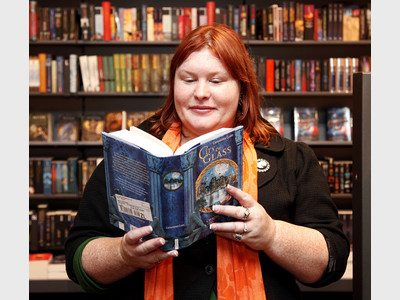

¿Quieres convertirte en un nefilim?
Bienvenido al Instituto
Cazadores de Sombras (The Mortal Instruments en inglés) es el nombre de la primera serie de Las Crónicas de Cazadores de Sombras creada por Cassandra Clare. El primer tomo de la obra fue publicado el 27 de marzo del 2007 en Estados Unidos mientras que en español no fue publicado hasta el 17 de febrero del 2009. La Editorial Planeta, bajo sus sellos Destino y Booket, se encarga de su publicación y distribución en España y América Latina. Esta serie sigue a Clary Fray, Jace Herondale, Simon Lewis, Isabelle y Alec Lightwood y otros subterráneos y cazadores de sombras del Instituto de Nueva York. Creyendo ser alguien normal al principio, Clary es absorbida hacia el mundo de los nefilim y de otras criaturas cuando descubre que es una cazadora de sombras.
Información de la autora
Judith Rumelt, nace en Teherán, Irán; 27 de julio de 1973, que escribe con el seudónimo Cassandra Clare, es una escritora estadounidense conocida principalmente por ser de la autora de la serie de libros de Cazadores de Sombras. Cassandra Clare nació de padres estadounidenses en Teherán, Irán, y pasó gran parte de su infancia viajando por el mundo con su familia. Ella vivió en Francia, Inglaterra y Suiza antes de cumplir los diez años. Como su familia se mudaba tanto, encontró familiaridad en los libros y fue a todas partes con un libro debajo del brazo. Pasó sus años de secundaria en Los Ángeles, donde solía escribir historias para divertir a sus compañeros de clase, incluida una novela épica llamada "La bella Cassandra", basada en una historia corta de Jane Austen del mismo nombre (y que más tarde inspiró su seudónimo actual)